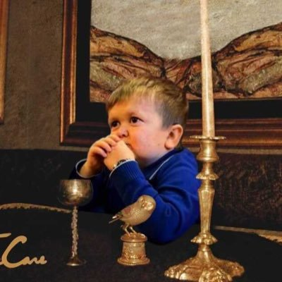

Why we love Hasbulla
7th January 2023It will come to no surprise to those who know me that I'm a big fan of Hasbulla Magomedov. But why? Why worship some guy (not a kid) from Dagestan born with a genetic disease who speaks a language you don't understand and doesn't really actually make any content?
In the age of influencer supremacy in the cultural zeitgeist, Hasbulla has stood out as the premier producer of memeable content. His look may at first seem unsual but he undeniably intriguing and enjoyable to watch. His values are more or less wholesome (with some minor irks) and his reputation is pretty much prestine making him the best personality for memes right now. But a key aspect of his personality which builds his scucess I believe is the mix of childish amusement, maturity and masculinity.
Hasbulla's appeal can be reduced to simply to what he represents. Hasbulla is a grown man born with a genetic disease making him physically look like a preschooler but he also possess the values and personality akin to a Don Corleone. To the average person struggling with obstacles of life Hasbulla is a represenation of the young childish sides of us that we had at one time or another abandoned in our transition to adulthood. Hasbulla is right now in a pergatory of these two states of life. When we see him do fun stuff like punching people, driving cars or playing with a monkey it evokes nostalgia for the childish enjoyment of life. No responsibilities or worries.
At the same time he possesses the understandings of the world of a young adult which makes up the majority of his fanbase. He's just one of us, embracing the difficulties which life has brought upon him with a vibrant spirit using his deficiencies as a weapon for his success. He isn't sad or embarrassed for the way he is but demands respect and walks with his head held high
How can you not respect that.